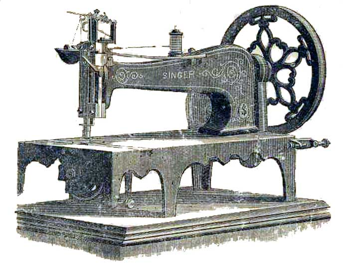

THE NEEDLEBAR - Online Manuals Section
Directions for
Using
The Singer Manufacturing Co’s

No. 2 and No. 3
Standard Sewing Machines
____________________________________
Secured by Seventeen Distinct
Patents
____________________________________
Principle Office of the Company
34 Union Square, New York
DIRECTIONS
To Put the Stand Together
Place the two side frames so that the projections at the top are on the inside; put the treadle in its place with its heel towards the front, connect the two sides by placing the cross-bar across the lower part of the stand under the toe of the treadle; place the lower ends of the cross-brace in the holes at either end of the cross-bar and the upper ends in the corresponding places at the top of the side frames; place the top or table on the side frames, taking care that the lugs on its under side pass through the projections on the side frames, and secure the whole by driving the pins through the lugs of the table underside the projections on the side frames.
This being done, place the machine on the tables, connecting the treadle with the driving-wheel by the wooden pitman.
To Oil the Machine
Oil the hinge of the check-lever, the needle-bar at the top on both sides, the needle- cam and roller, the foot-bar both at the upper and under brass; also oil the holes at either end of the arm and on the bed of the machine; by turning the balance-wheel, an oil-hole, which must be oiled, will appear through the large hole in the base of the gear-cover; also oil the hole at the right end of the under-shaft. Remove the shuttle- race slide, and oil the slide of the shuttle-driver, and also oil the shuttle race a very little, about three times a week. On the underside of the machine the shuttle-pitman should be oiled at either end; also the feed-cam and the end of the rock-shaft that rests on the cam; also the holes in which the rock-shaft works, and the pin on which the feed-dog works, a little oil should be put upon the feed-wheel hub and stud occasionally, and when in use the spooler should be oiled. Be sure not to oil anything about the feed-wheel except the stud, oil both sides of the treadle, and the wooden pitman at both ends; and finally, as a general rule, oil every part where one piece rubs against another. After oiling, remove the shuttle, and run the machine rapidly a minute, then wipe off all superfluous oil with a piece of rag or cotton waste. Be sure that every part is clean before you commence to sew. If the machine runs hard at any time while in use, it is certain some place has not been oiled. If it runs hard after standing idle for some time, use a little paraffine or benzine on the wearing points, run rapidly, and wipe clean; then oil with the best prepared sperm oil, which should always be used. To make sure of good oil, buy it at one of the Company’s offices or from its authorized agents.
To Operate the Treadle
Place the centre of the foot (one or both) on the treadle in such a manner that both heel and toe may be used in turning the machine; then take hold of the balance-wheel on the upper side and draw it towards you, allowing the foot to move freely with the motion thus imparted, and continue the motion of the foot by a pressure upon the heel and tow alternately, until a regular motion is acquired; until this is done sewing should not be attempted.
To Set the Needle
First, loosen with the screw-driver
the screw that clamps the needle, and allow the needle-bar to rest at its highest
point; then take the needle (with its short groove towards the shuttle) between
the thumb and finger of the left hand, and place the point down through the
hole in the throat-plate; hold fast while you turn the balance-wheel gently
towards you until the needle-bar moves downward to admit of your guiding the
needle into the groove under the clamp; adjust the needle so that the eye will
be just even with the upper surface of the throat-plate and at right angles
with the shuttle- race, turning the balance wheel gently either way as required,
until the gauge mark (a distinct line graven in the front of the needle-bar,
near the top) rests even or full above
the top of the face-plate; then screw fast, taking care to make each of the
two screws draw equally upon the clamp. Observe that the needle passes through
the hole in the throat-plate without touching either side. As a rule, it should
be nearest to the side towards the shuttle. When using coarse cotton or linen
thread, set the needle a sixteenth of an inch lower, and use the throat-plate
with large hole.
To Wind the Bobbin
Raise the presser-foot with the presser-bar lifter, remove the shuttle, adjust the small driving band used for imparting motion to the bobbin-winder around the balance-wheel and the bobbin-winder pulley; place the spool of thread to be wound from on its spindle, and place the bobbin in the bobbin-winder. To secure the end of the thread preparatory to winding, place it between the head of the bobbin and the cup at the end of the bobbin-winder spindle; then proceed to operate the treadle as in sewing, letting the thread pass gently between the thumb and forefinger of the right hand, which should be held about fifteen inches from and on a line with the bobbin-winder, so that the thread may be evenly and tightly wound upon the bobbin. Very much depends upon the proper winding of the bobbin.
To Thread the Shuttle
Take the shuttle between the thumb and the forefingers of the left hand with the point to the right. Place the bobbin within the shuttle by putting one end in the hole or centre, towards the point; then pass the other end down the groove in the blunt end, always placing the bobbin so that the thread will draw from its under side: pass it through the hole nearest the blunt end of the shuttle; then through as many holes as shall be necessary to produce the tension required; but last, in every case through the hole nearest the point, either outward or inward. In the latter case pass it out through the long slot, and, in all cases, lastly, under the thread guide or spring, on the side of the shuttle.
To Thread the Needle
The spool being placed on its spindle, pass the thread through the eye at the end of the tension wire, and through the eye at the end of the thread thread-take-up lever; then hook the two parts of the thread – namely, that ascending to the take-up lever: from the tension wire, and that descending from the take-up lever to the needle, into the hook at the lower end of the wire-staple on the face-plate. In other words, the thread should pass from the tension wire through the hook at the lower end of the wire staple on the face-plate; then up through the eye at the end of the take-up lever, then down through the hook in the lower end of the wire-staple, then through the hole or eye in the needle-clamp, on the lower end of the needle-bar, and finally, from left to right, through the eye of the needle.
To Regulate the Tensions
After threading the shuttle, try by drawing the thread towards the blunt end; if it draws as tightly as it will bear without breaking, it is right for goods of firm texture; thin soft goods require a looser tension. To obtain more or less tension, pass the thread through more or less holes, as described above.
The tension on the needle-thread is obtained by turning the tension-wing over towards the operator; take hold of the thread just above the needle and draw it downwards from the spool, and continue to turn the tension-wing until the thread draws as tightly as it will bear without breaking. For thin, soft goods, the same rule applies for the needle as for the shuttle-tension.
To Commence Sewing
Place the shuttle in position in the shuttle-race, leaving about two inches of thread projecting, and close the slide; then draw about two inches of the upper thread through the eye of the needle, and with the left hand hold the end, leaving it slack from the hand to the needle, while you turn the wheel gently towards you until the needle moves down and up again to its highest point, then gently draw the needle-thread, and the shuttle-thread will appear; draw the end of the shuttle-thread through the hole in the throat-piece, when the two threads should be laid to the left across the feed-wheel; then place the fabric beneath the needle, lower the presser-foot upon it, and operate the treadle. After a few stitches are formed, stop and examine them. The secret of perfect sewing lies in the adjustment of the tensions so that the stitches shall be locked in the centre of the goods and show alike on both sides. The adjustment of either tension may be regulated as before described.
To Remove the Work
Allow the needle to rest at its highest point, taking hold of the thread just above the needle, and drawing from the spool about three inches slack; then raise the presser- foot, and with the left hand draw the fabric from the left side upwards about three inches; then cut both threads.
Regulating the Length of the Stitch
On the side of the machine next the operator at the left hand corner, and below the table of the machine, are two brass nuts, which are used for adjusting the stitch. By screwing up these nuts, the stitch will be lengthened, and by reversing the action it will be shortened. These two nuts, when the length of the stitch is determined, should be screwed tight together, which will prevent their moving by the operation of the machine.
General Remarks
For stitching patent leather and other materials which are hard and difficult or perforation, the Imperial Machines are used. They are furnished with an iron cup, to hold a drying oil. Boiled linseed oil, prepared with litharge in the manner used by painters, is the proper oil for this purpose. The effect of thus oiling the thread is, to prevent heating the needle, and to make the stitching of leather as rapid and easy as cloth sewing. The silk twist, after being oiled, rapidly dries, and is left with its surface as smooth and perfect as if no oil had been used – and the firmness of the seam is improved by it.
The machines are sent out with the feed-wheel set for medium work – neither heavy nor light. When sewing thin goods lower, and for very heavy goods raise the feed-wheel. This can be done by loosening the nut which holds the feed-wheel stud in place, and moving the wheel to the desired position; then screw fast.
When the feed-wheel fails to make a uniform length of stitch, it must be well cleaned, and the block pressing against its left side must be made to press more firmly, which is accomplished by turning the screw that holds it in place to the right; this may be done by means of the small wrench furnished with each machine.
At the top of the needle-bar is a staple fastened by a washer and screw, which will seldom need to be disturbed; but in case very heavy goods are to be sewed, it may be necessary to lower it a little in order to obtain more slack thread. The following rule should be followed in adjusting this staple: first put a white thread in the eye of the needle, and the number of thicknesses of the goods to be sewed under the needle, in a proper position for operating. Then move the machine directly until the needle descends so that the needle eye is directly at the upper surface of the cloth; then resting there, bring the staple of the needle-bar in contact with the upper surface of the horizontal wire check-lever, and then screw the staple firmly in its place.
Each machine is furbished with two sets of check-springs and presser-springs – one heavy, the other light – to be used for corresponding classes of work.
Twist Linen and Cotton Threads
Do not use poor thread. Any good thread will work well, but you must not expect to make a smooth even stitch, with poor rough thread. Persons living at a distance from an agency can send by mail enclosing us the money, and we will fill orders promptly by mail or express.
Extras
We furnish with each machine one extra throat-plate, one extra check-spring, one extra presser-spring, one large wrench, one small wrench, one spooler band, six needles, and copy of printed directions.
To Select Needles and Thread
In sending Orders, always specify the number required.
| Size of Needle | Class of Work to Sew | Size of Cotton, Linen or Silk |
1/2 |
Shirtings, Sheetings, Bleached Calicoes, Muslins, Silks and general Domestic Goods, and all classes of General Work | 60 to 90 Cotton, 0 and 00 Silk Twist. |
1 |
All kinds of Heavy Calicoes, Light Woolen Goods, Heavy Silks, Seaming, Stitching, &c. | 40 to 60 Cotton, A and 0 Silk Twist. |
2 |
Tickings, Woolen Goods, Trousers, Boys’ Clothing, Corsets, Cloaks, Mantles, &c. | 24 to 40 Cotton, A and 0 Silk Twist. |
3 |
Heavy Woolens, Tickings, Bags, Heavy Coats, Trousers, &c., Heavy Clothing generally. | 10 to 24 Cotton, A and B Twist, and 60 or 80 Linen |
4 |
Bags, Coarse Cloths, Heavy Goods of any Texture. | 40 to 60 Linen and B C & D Silk Twist or very Coarse Cotton. |
5 |
Very Heavy Goods, where a strong thread is wanted. | 35 Linen and D E & E E Silk Twist. |
For extra heavy goods use from No. 5 to No. 7 needles and from 50 to 35 linen, and C to E E twist.
The Singer Manufacturing Company
use and recommend exclusively the Willimantic 6 Cord Spool Cotton.